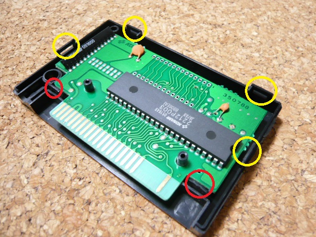

３．カートリッジの分解
まず、ゲームのカートリッジを分解します。細めの−ドライバが数本必要になります。
・まずシールをはがします。シールに隠れていたところに二ヶ所の四角い穴があります。
・ドライバーをその穴にいれ、爪を緩めます。
写真の赤色の丸で示した爪を上側に押し上げる感じです。
・そのままの状態で側面の黄色の丸で示した爪の位置にドライバを差し込みます。
差し込んで、裏側に倒すように（前面のケースを広げるように）して爪を外します。
・外れたら隙間にドライバを差し込んでその状態を保持し、逆側の爪を外します。
・両側と下側の爪が外れたら、あとはケースを軽くねじるようにガタガタ動かすと上側の爪も外れます。

基板が出てきたら写真と見比べ、同じであることを確認します。一応、メガＲＯＭコントローラの型番も
確認してください。
 次へ
次へ